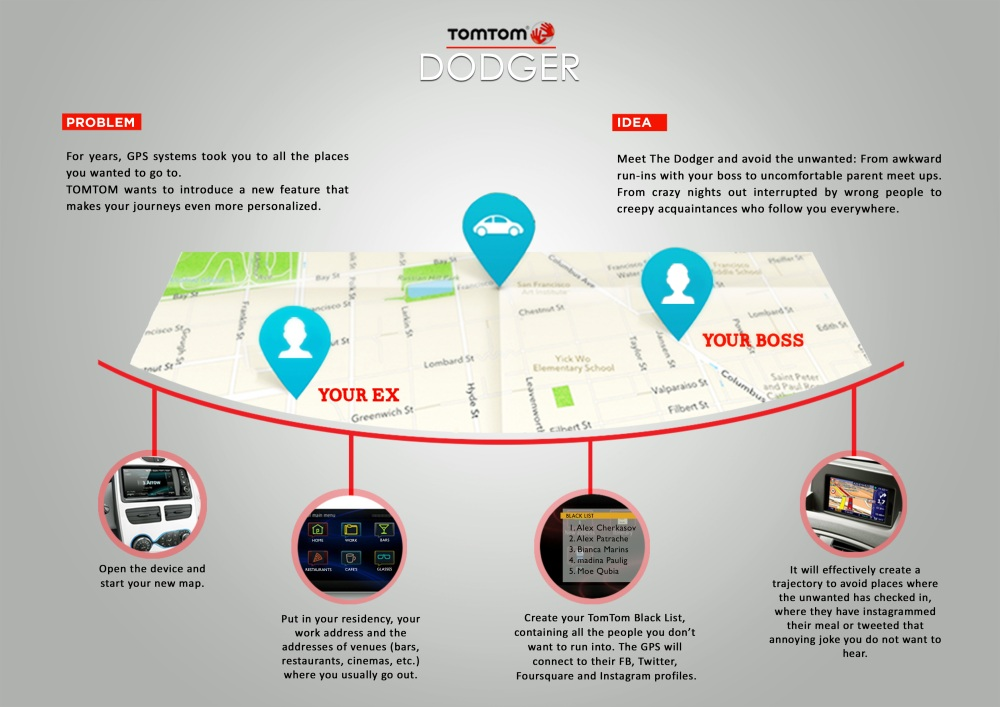

TOMTOM DODGER
GPS systems are appreciated throughout any type of journey. However, they certainly can always be improved. So how about enjoying your drive to the fullest, without any unwanted interruptions or surprise setbacks? A new feature in TOMTOM GPS systems may help you do just that.
CREDITS: CW - Alex Petrache | AD – Sayalee Kaluskar
Instructors: Timm Weber / Grabarz & Partners Hamburg, Germany
